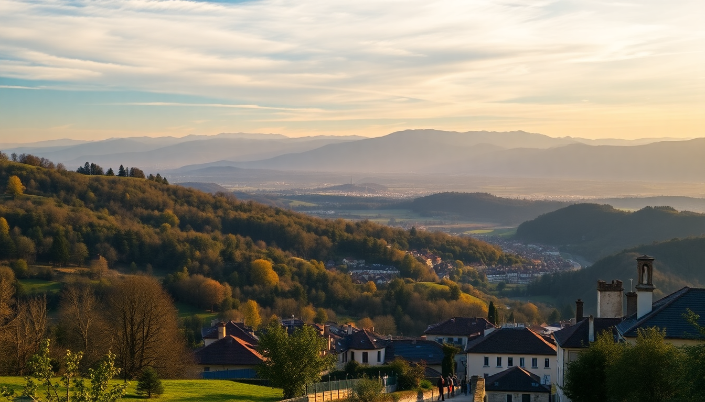

Best Day Trips from Lyon: Beaujolais Wine, Annecy & Roman Vienne

I spent a week based in Lyon and quickly realized the city is a perfect hub for short escapes. You can be in a Roman city, a wine village, or the Venice of the Alps within 30–90 minutes by train. Here’s exactly how I did each trip, what I’d skip, and where I’d go back.
Why base yourself in Lyon for day trips?
Lyon’s Part-Dieu and Perrache stations put you on the main rail lines to the Alps, the Rhône valley, and Burgundy. You don’t need a car. Most trips run on TER regional trains (cheap, no reservation needed) or direct TGV connections. I liked that I could have a croissant in Lyon, be wandering a Roman amphitheater by 10 AM, and be back for a bouchon dinner by 7 PM.
How do you get to the Beaujolais wine region from Lyon?
Take the TER from Lyon Perrache to Villefranche-sur-Saône (30 minutes, €8 one-way). From there, local buses or a quick taxi (10 minutes, ~€15) get you into the actual vineyards. I skipped the bus and walked 40 minutes from the station to Oingt, one of the “Plus Beaux Villages de France” — a steep walk but worth it for the view over the golden-stone houses.
- Wine tasting at Domaine du Pavillon de Chavannes — small family estate, €12 for a flight of three Crus (Morgon, Brouilly, Côte de Brouilly). No pushy sales talk.
- Lunch at Le P’tit Bouchon in Oingt — honest Lyonnaise cooking (salade lyonnaise, quenelle) for €18. Reservations not needed on weekdays.
- Hike the Sentier des Vignes — a 5 km loop through vines between Oingt and Theizé. Marked path, easy grade, takes 1.5 hours.
- Skip the tourist train in Villefranche — overpriced and you see nothing you can’t see on foot.
My honest take: Beaujolais is underrated compared to Burgundy. The Crus (village-level wines) are excellent, crowds are thin, and you can talk to winemakers without an appointment. Don’t bother with Beaujeu village — it’s pretty but has one café and nothing else.
Is Annecy worth the 2-hour train from Lyon?
Yes, but with a caveat. The TGV from Lyon Part-Dieu to Annecy takes 1 hour 50 minutes (€25–€35). The old town and lake are postcard-perfect, but the canals are packed with selfie sticks by 11 AM. Go early, or skip the old town entirely and rent a bike.
- Rent a bike at Roul’Ma Poule (€20 for half-day) and ride the 15 km lake path to Menthon-Saint-Bernard. Flat, paved, and you’ll pass Château de Menthon-Saint-Bernard perched on a cliff.
- Lunch at Le Freti in Annecy-le-Vieux — locals only, no English menu. The perch fillet with lemon butter (€16) is the best I ate in the region.
- Visit the Palais de l’Isle only if you have 30 minutes to kill — it’s a 12th-century prison turned museum, but the queue is long and the interior is sparse.
- Avoid the lake cruises — €15 for a 45-minute loop that shows you the same shoreline you can see from the bike path.
I’d recommend Annecy for a full day (leave Lyon by 7:30 AM, return by 7 PM). Half-day feels rushed. If you’re not a swimmer or biker, the appeal drops — the old town is small and you’ll see it in 90 minutes.
What’s in Vienne that’s worth a half-day trip?
Vienne is 25 minutes from Lyon Perrache on the TER (€7). It’s a Roman city that doesn’t try to be Arles or Nîmes — it’s just a working town with two world-class monuments. I spent 4 hours there and felt I saw everything.
- Temple d’Auguste et de Livie — a near-intact Roman temple smack in the middle of the main square. Free to walk around, no fence, no ticket.
- Théâtre Antique — €8 entry. It’s a 13,000-seat Roman theater, still used for concerts. Climb to the top row for a view of the Rhône valley.
- Lunch at Le Bec Fin — €14.90 lunch menu (terrine, duck confit, tarte tatin). No nonsense, packed with retirees. Cash only.
- Jardin de Cybèle — a small archaeological garden behind the theater. Free, quiet, and you can picnic on Roman wall fragments.
- Skip the Musée des Beaux-Arts — the collection is provincial and poorly labeled.
Vienne is perfect for a morning or afternoon. Pair it with a stop in Villefranche-sur-Saône on the same train line if you want a longer day. I wouldn’t stay overnight.
When is the best time of year for these day trips?
- Beaujolais: Late September to early October (harvest season, fewer tourists, the vines are golden). Avoid July–August — tasting rooms are overwhelmed and the heat makes walking the Sentier des Vignes unpleasant.
- Annecy: May or September. June–August the lake is crowded and the water is swimmable, but the train is packed and bike rentals sell out by 9 AM.
- Vienne: Any time except August (heat) and during the Jazz à Vienne festival (late June–early July) when the theater is closed for setup and the town is overrun.
I did all three in October. Annecy was still pleasant (15°C, clear skies), Beaujolais was stunning, and Vienne was empty.
FAQ
Can you do Beaujolais, Annecy, and Vienne as a single-day trip from Lyon? No. Annecy alone takes a full day (4 hours round-trip train). Beaujolais and Vienne can be combined if you start early: train to Vienne at 8 AM, back by noon, then train to Villefranche-sur-Saône by 1 PM. You’ll have 3–4 hours in the vineyards before the last train back to Lyon at 7 PM.
Do I need to book train tickets in advance? For TER regional trains to Vienne and Villefranche, no — just buy at the station or on the SNCF app. For the TGV to Annecy, yes. Book at least 2–3 days ahead for the €25 fare; walk-up price is €45–€55.
Is Annecy overrated? Parts of it are. The old town canals are beautiful but feel like a Disney set. The lake and the mountain backdrop are genuinely stunning. If you bike or swim, it’s worth the trip. If you only want to walk the canals, you’ll be done in an hour and disappointed by the crowds.
Conclusion
- Beaujolais is the most underrated day trip — real winemakers, no crowds, cheap trains. Go for the wine, stay for the hilltop villages.
- Annecy delivers on scenery but demands an early start and an active plan (bike or swim). Skip the lake cruises and the Palais de l’Isle.
- Vienne is the best half-day option — Roman ruins without the ticket prices or tourists of Provence. Combine it with Villefranche for a full day.
- Lyon’s Part-Dieu station is your launchpad. Learn the TER schedule (hourly to most destinations) and you’ll never need a car.
- October is the sweet spot for all three — good weather, thin crowds, and harvest season in Beaujolais.